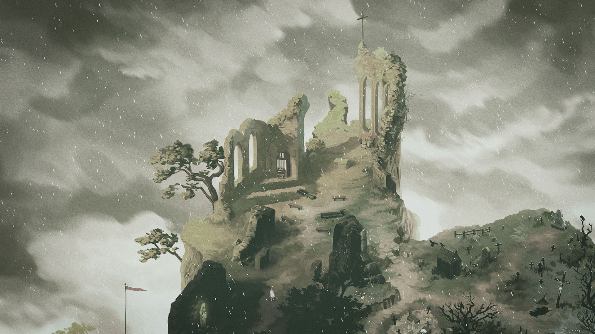
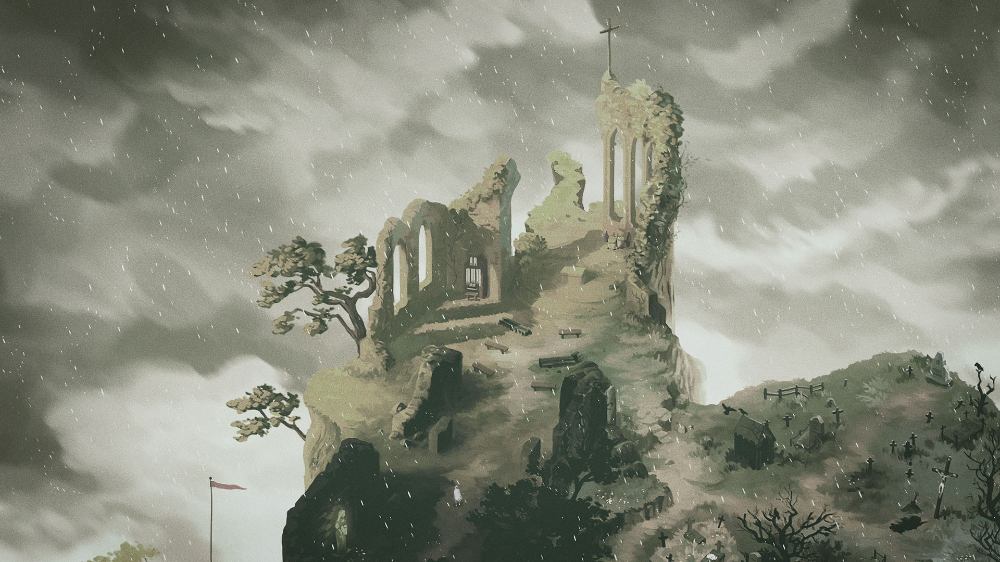

Roles: Art direction & Background design for Arte Interactive & LaBelle Games
I led art & created rich environments for a game that lets you explore the romantic and sensible story of the classic novel Frankenstein. The Wanderer is produced by Arte & LaBelle Games, with support from CNC.
The game has received numerous nominations and an average score of 8/10.
It's available on desktop & mobile computers:
frankenstein.arte.tv
 



With an always distant camera, both the character and the player travel large sceneries to discover how they came to be and how to handle the repudiation of others.
The scenery had to be romantic and sublime. I was inspired by painters like Friedrich, Corot, Robert, Deshayes, and videogames like Below and Totem Teller.


Everything you see here is selected to present my work. Please use the official presskit to get offical artworks for the game.